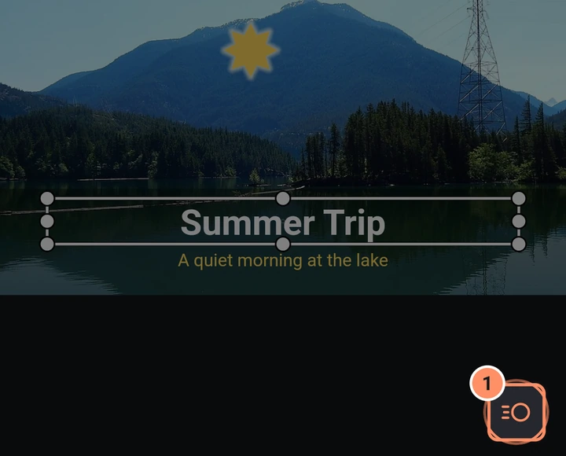

Peralihan dan animasi
Peralihan satu ketikan antara klip dan animasi Masuk, Keluar serta Gelung untuk mana-mana lapisan.
Kedua-duanya menulis bingkai kunci dan kesan biasa yang boleh anda edit kemudian, jadi anda boleh menggunakannya sebagai titik permulaan.
Animasi Masuk, Keluar dan Gelung
- Pilih lapisan visual (bukan audio, kamera atau objek nol).
- Ketik butang bulat Animasi di bahagian bawah kanan pratonton. Helaian Animasi terbuka.
- Pilih Masuk, Keluar atau Gelung di bahagian atas, kemudian satu jubin. Tiada ialah yang pertama dalam grid.
- Tetapkan Tempoh.


| Animasi | Tempoh | |
|---|---|---|
| Masuk dan Keluar | Pudar, Luncur ke kiri, Luncur ke kanan, Luncur ke atas, Luncur ke bawah, Zum masuk, Zum keluar, Pop, Lantun, Pusing, Kabur | 0.1 hingga 2 saat (lalai 0.5) |
| Gelung | Denyut, Goyang, Apung, Putar | 0.2 hingga 4 saat (lalai 1) |
Animasi Masuk diletakkan pada permulaan klip, animasi Keluar pada penghujungnya, dan animasi Gelung berjalan sepanjang klip. Jika hujung klip itu sudah mempunyai peralihan, memilih animasi akan menggantikannya, dan helaian itu akan memberitahunya.
Peralihan antara dua klip
Peralihan menggabungkan satu klip ke klip seterusnya. Ia memerlukan dua klip visual yang mana klip kedua bermula dan berakhir lebih lewat daripada klip pertama.
- Letakkan kedua-dua klip supaya ia bersentuhan atau bertindih. Dengan tiada apa-apa dipilih, butang bulat Peralihan muncul di bahagian bawah kanan kawasan garis masa, tepat di atas butang +, apabila kepala main berada di potongan itu. Atau pilih kedua-dua klip dan ketik Tambah peralihan antara dua klip pada bar di bahagian bawah.
- Helaian Peralihan memaparkan "Klip A ke Klip B" dan grid peralihan dengan Tiada di hadapan.
- Pilih satu dan tetapkan Tempoh (0.1 hingga 2 saat, lalai 0.5).


Peralihan yang tersedia: Pencairan silang, Pudar ke hitam, Pudar ke putih, Luncur ke kiri, Luncur ke kanan, Luncur ke atas, Luncur ke bawah, Tolak ke kiri, Tolak ke kanan, Tolak ke atas, Tolak ke bawah, Sapu ke kanan, Sapu ke kiri, Sapu ke atas, Sapu ke bawah, Sapu jam, Zum masuk, Zum keluar, Pusing, Kabur, Bercahaya, Pusaran, Pan pantas, Glitch, Kilat, Gegar, Piksel dan Larut hingar. Tolak, Zum masuk, Zum keluar dan Pusing mempunyai kabur gerakan. Grid ini boleh digulung: leret ke atas untuk melihat yang terakhir.

Jika klip tidak bertindih dengan cukup, aplikasi akan mengalih atau memendekkannya dan memberitahu anda, contohnya "... dialihkan ... lebih awal supaya klip bertindih." dan "Dipendekkan kepada 0.5 s untuk menyesuaikan klip." Lapisan audio, kamera dan objek nol tidak boleh mempunyai peralihan.
Untuk mengalihkan butang Peralihan daripada laluan, leret ia ke sisi menghala ke tepi skrin; ia muncul semula apabila anda menggerakkan kepala main. Tetapan > Editor > Butang peralihan dalam pratonton memindahkannya ke bahagian bawah kiri pratonton.
Buat sendiri
Satu kesan, kesan Gerak atau satu set bingkai kunci melakukan tugas yang sama dengan lebih kawalan. Simpan rupa yang anda suka sebagai pratetap untuk menggunakannya semula: lihat Aset, templat dan pratetap.